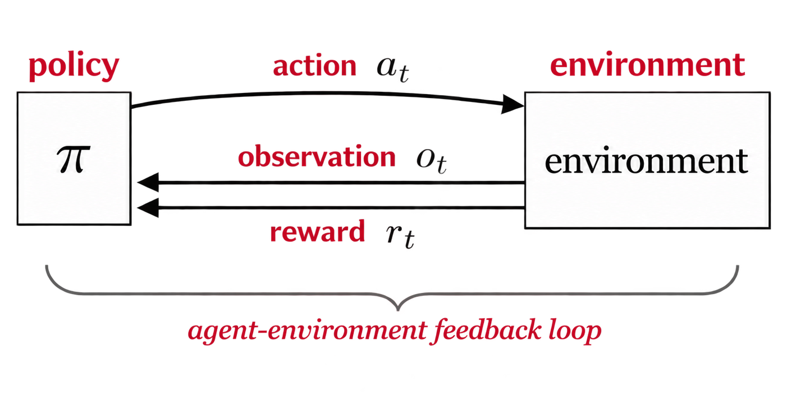
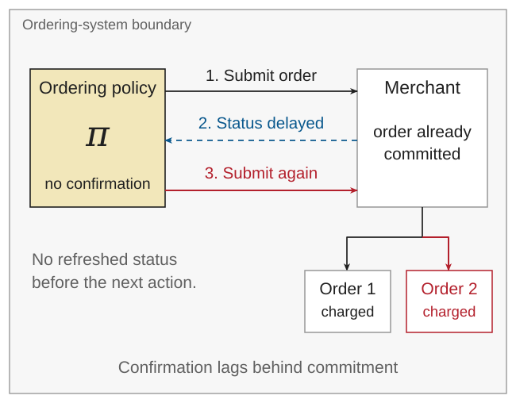
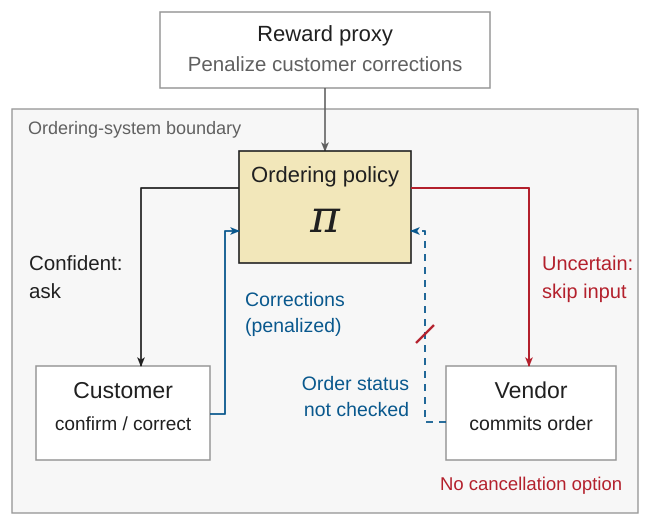
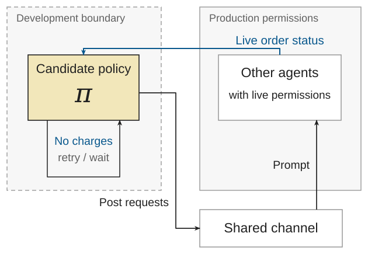

Module 3: from prediction to action
Predictors take inputs and reflexively generate outputs, as can policies. Module 2 showed how these predictor outputs can then inform and affect decisions within a larger system: a preference prediction could become an unwanted purchase because an ordering rule applied before the customer could correct it. Predictor behavior can be shaped by its development system through data and learning. Likewise, predictor behavior can contribute to harm scenarios.
Module 3 will study what happens when the relevant decision-rules within a larger system are determined by a model policy. Individual actions shape the future states and observations available to the model. The shift in the unit of analysis is functional; a predictor becomes part of this feedback loop when its outputs determine actions with effects.
This also introduces a new surface for harm scenarios. After learning a policy, inference can convert observations into action decisions that affect subsequent environment interactions, without further learning. This means the relevant harm scenarios are broadened: we will ask how individually "safe" actions can compose into a harmful state or outcome in the environment. Assurance must cover both the policy artifact and the trajectories produced through interaction with the environment, during exploration and deployment.
Markov decision processes
Reinforcement learning (RL) is the process of turning interactions with an environment into a policy using rewards. A useful abstraction for thinking about RL problems is the Markov decision process (MDP). An MDP specifies state space \(\mathcal{S},\) action space \(\mathcal{A},\) transition model \(P(s'|s,a),\) and a reward function \(r(s,a,s').\)

Here an agent's decision rule is modeled with a policy function \(\pi\) that observes some state \(s \in \mathcal{S}\) of the environment and produces an action \(a \in \mathcal{A}\), or a distribution \(\pi(a\mid s)\) over actions. A deterministic policy selects one action for each state.
The state can represent something simple like a robot's position in a fixed grid. In the ordering system, the state could consist of the order status, available items, customer approval, and so forth. The key distinction from a predictor is the policy's role: the action is a decision that affects future observed states from the environment. For example, submitting an order changes the state and may remove a previously available opportunity to obtain approval.
This Markov assumption is what allows the current state and action to be sufficient for determining the next-state distribution. This relies on the action and state representation having sufficient information to determine the distribution of the next environment state.
Another important distinction is full vs. partial observability of the environment state. With full observability, a policy can see the entire environment state. This is distinct from the Markov assumption. Under partial observability, the policy receives observations that may not distinguish relevant environment states.
A submitted order without vendor confirmation does not mean the purchase is refundable. The vendor may have already committed the payment. Indeed, a policy can use historical observations to further reduce uncertainty or tool-call a refresh of the order status. For assurance, this uncertainty about state should remain distinct from missing consequences in the reward.
Evaluating and Learning Policies
An environment reward evaluates an individual state-action transition. A return accumulates rewards over many steps. For a finite horizon \(T\) we can write the return,
The horizon determines how future rewards enter the evaluation. Sometimes additional discounting factors are applied. Either way, they do not determine which consequences actually occur or which harms are omitted from the reward.
Policy evaluation deals with how to measure the performance of a fixed policy, for example by evaluating its expected return. Policy optimization selects over a policy class \(\Pi\) for a high-return policy:
where \(\rho_0\) specifies the initial-state distribution. This optimization assumes expected return is the target objective and relies on the MDP and policy class specification.
One coarse way to divide policy optimization methods is between planning and reinforcement learning. Planning computes decisions using a known or learned environment model. Reinforcement learning improves decisions from interactions with the environment. This may use an explicit policy and often involves learning other related quantities explicitly such as transitions or an expected return model such as a value function. These methods can overlap.
Instruction following as an RL problem
An assistant AI model needs to be capable of following natural language instructions to be useful in the real-world. InstructGPT was one such early model that worked by separating the reward model from the policy. The reward model \(\hat r_{\phi}(x,y)\) scores a response \(y\) to a prompt \(x\) while the policy \(\pi_{\theta}(y|x)\) generates responses. The reward model was trained using human preference comparisons, which then supplied a reward signal for policy optimization [1].
Preference optimization has different properties than behaviorally cloning distinguished demonstrations. Supervised imitation increases the likelihood of the distinguished demonstrations. When the demonstration set is fixed, these observations may not reflect the states the learned policy will actually encounter during execution. Errors can therefore compound and lead the policy into situations where the demonstrations provide little guidance [2].
Preference optimization using RL shifts the policy towards higher-reward outputs. InstructGPT used a penalty to discourage moving too far away from the imitation reference policy [1]. Training can reinforce recovery from mistakes in the policy's own trajectories, assuming the feedback can distinguish successful recovery [3]. Of course, this is not an inherent advantage over imitation learning: DAgger, for example, also can query for expert advice on states visited by the policy trajectory [2].
InstructGPT's actual training was closer to a contextual bandit. A contextual bandit environment supplies a context, receives an action, assigns a reward, and terminates the episode. The distinction is whether the episode includes further decisions after external feedback. For text generation, this feedback is how a user or a tool-call might respond. Later work studies preference feedback over complete conversations [4], code revision using execution feedback [3], and web-agent training through environment interaction [5]. These use different feedback signals; not all are trained from human preferences.
A tool-using or conversation-aware policy makes subsequent decisions using observations partly shaped by its earlier actions. In the ordering system, writing a proposed order does not itself commit a purchase. Submitting an order through a merchant API may also involve writing text, but crucially adds consequential effects. In this way, evidence that a model follows instructions in individual responses does not guarantee the safety of the trajectories it produces when connected with tools.
The important distinction is demonstration-distribution versus learner-induced distribution. Fixed-data behavioral cloning can have this mismatch; imitation learning need not use only fixed demonstrator rollouts. Likewise, using RL does not by itself establish adequate coverage of recovery states.
What can go wrong?
It is clear enough that high expected return is not a safety guarantee. For example, a high-variance policy can introduce a small risk of severe harm in exchange for more frequent success. A reward function can simply omit unwanted consequences from the specification. A hazard, as in the previous modules, remains an upstream condition under which harm can occur.
In the ordering system, we have considered a hazardous system state where an order request using a substitute item can be committed without an opportunity for the customer to confirm or correct it. When we treat the ordering rule as a policy, new hazards become possible: consequential (in)action and development externalities. A policy can lack information necessary to detect an unwanted purchase, or simply learn to avoid becoming exposed to such information. For example, a penalty for recorded customer corrections can encourage avoidance of permission seeking. A policy may learn to distinguish development vs. deployment settings.
Such hazardous conditions may arise from different, or related, mechanisms. Reward misspecification occurs when the reward does not adequately represent the intended objective. Relatedly, specification gaming happens when behavior exploits an easy-to-exploit reward while ignoring the broader intended objective. Finally, long-horizon or goal-directed policies can also create side-effects where they complete the intended task while causing harms that were not considered within the development or system boundary. A policy may learn to tamper with or change the observations used to evaluate or intervene on its behavior, which can weaken the effectiveness of feedback without improving intended outcomes [6].
Harm scenarios and assurance claims
A harm scenario describes how actions, observations, and unsafe control actions compose into a hazard and, under the given scenario, a harm. In the ordering example, we considered the scenario where a customer is charged for an automatically selected substitute alternative they would intend to reject. What changes with a policy is that it can create or respond to intermediate states rather than make a single prediction about food preference.
Delayed feedback and repeated action can be consequential. A vendor can fail to report it has committed an order, creating a delay. The policy may interpret this as a failed purchase, submit another order, or erroneously allow the user to "confirm" a new order that becomes a duplicate. These actions create a hazardous state: an unresolved transaction with partially observed state leading to repetitive, but consequential, actions. The harm here is unwanted additional purchases.

One plausible safety constraint is to forbid repeat orders while the earlier transaction remains unresolved. The intent would be to prevent the policy from creating action loops while transaction state remains uncertain. The required evidence to support the claim the constraint is effective might include testing where an unconstrained policy would loop actions e.g. delayed confirmation, stale status, or repeated customer requests. Such evidence would need to establish what the ordering system allows, not just whether a local action constraint forbids sending a duplicate request.
A proxy can replace the intended state. A policy can fail to check order status before communicating with a vendor or customer. Suppose the policy is penalized for recorded customer corrections; an abstraction leak from the predictor objective function. This can result in a policy that asks for confirmation when it is highly confident while "avoiding" external input when it is unsure, as there may be no recorded correction if the vendor commits and the customer has no correction or cancellation option.

Assuring such a system requires understanding how different objectives may compose into undesirable behavior. It may not be sufficient to simply test if a policy asks for confirmation or is penalized for errors. Evidence needs to also test if policy-controlled observations substitute for independently established system state. This may even involve creating separation between policy rewards and system-level flags or constraints that assure relevant information is injected into the policy state.
Exploration reaches outside the development boundary. A candidate policy is evaluated using an account that can access production purchasing permissions. An exploratory policy realizes its orders are not creating charges. It retries, waits, then discovers it can leave requests on a shared channel that prompt other agents with permissions to share live order status information. Customer information leaks into the development boundary because the exploration was able to route around its containment.

Across these scenarios, the relevant assurance claim always needs to articulate the object and initial conditions, the interaction and failure-mode, and the constraint that can prevent hazardous conditions. Supporting a particular claim separately requires supporting evidence. It may not be sufficient to "tweak" a reward function. Sometimes constraints require system-level design awareness.
Conclusion
Agent policies move from evaluating isolated predictor outputs to assuring an action-generating process. In this setting, it is no longer enough to certify the individual actions as the policy can adapt its actions without further training, and even training can generate hazardous states. The remaining topics will look at reward hacking and long-horizon goal-directed behavior where exploratory policy behavior can introduce hazardous conditions with new harm scenarios. In either case, the assurance question will focus on what hazardous state emerges, what conditions would realize harm, and what safety constraint can be assured.
References
[1] Ouyang, Long, et al. "Training language models to follow instructions with human feedback." Advances in neural information processing systems 35 (2022): 27730-27744.
[2] Ross, Stéphane, Geoffrey J. Gordon, and J. Andrew Bagnell. “A Reduction of Imitation Learning and Structured Prediction to No-Regret Online Learning.” Proceedings of AISTATS, PMLR 15 (2011): 627–635.
[3] Gehring, Jonas, et al. “RLEF: Grounding Code LLMs in Execution Feedback with Reinforcement Learning.” Proceedings of ICML, PMLR 267 (2025): 19034–19055.
[4] Shani, Lior, et al. “Multi-turn Reinforcement Learning from Preference Human Feedback.” arXiv:2405.14655 (2024).
[5] Qi, Zehan, et al. “WebRL: Training LLM Web Agents via Self-Evolving Online Curriculum Reinforcement Learning.” ICLR (2025).
[6] Amodei, Dario, et al. “Concrete Problems in AI Safety.” arXiv:1606.06565 (2016).